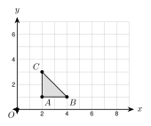
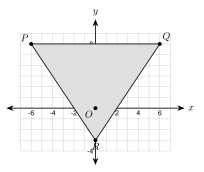
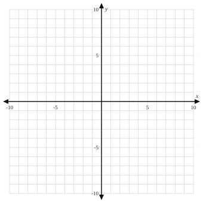
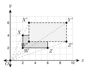
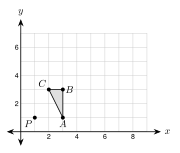
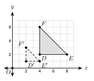
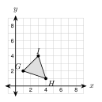
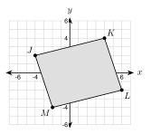

1.
2.
3.
The center is the origin. Dilate P(4, −6) with k = 12. Dilate Q(−2, 5) with k = 3.
P′ = (12 · 4, 12 · (−6)) =
Q′ = (3 · (−2), 3 · 5) =
P′ is closer to the origin, so this is a . Q′ is farther, so this is an .

Dilate △ ABC with k = 2 about the origin. A(2, 1), B(4, 1), C(2, 3).
A′ =
B′ =
C′ =

Dilate △ PQR with k = 13 about the origin. P(−6, 6), Q(6, 6), R(0, −3).
P′ = , Q′ = , R′ =

In the triangle with A(2, 1), B(4, 1), C(2, 3) and k = 2, compare the sides.
AB = and A′B′ = . A′B′ = 2 · AB.
BC = 4 + 4 = and B′C′ = 16 + 16 = . B′C′ = 2 · BC.
Slope of BC: 3 − 12 − 4 = . Slope of B'C': 6 − 24 − 8 = .
The slopes are equal, so BC ∥ B'C'. The angle at A is 90° and the angle at A′ is .

Rectangle WXYZ is dilated about the origin to W′X′Y′Z′. Find the scale factor.
Original width WZ = 4. Image width W′Z′ = .
k = 64 =
Check with a point: W(2, 2) → W′(3, 3), and 3 ÷ 2 = .
k > 1, so it is an .
a. A side of 12 cm becomes 30 cm. Find k.
b. A(−4, 6) maps to A′(−2, 3) about the origin. Find k.

Dilate △ ABC with k = 2 about the center P(1, 1). A(3, 1), B(3, 3), C(2, 3).
A: (3 − 1, 1 − 1) = (2, 0). Times 2: (4, 0). Add back: A′ = .
B: (2, 2) → (4, 4) → B′ = .
C: (1, 2) → (2, 4) → C′ = .
1. A dilation uses a and a scale factor k. The shape stays the same.
2. If k > 1 it is an . If 0 < k < 1 it is a .
3. Lengths are by k. stay the same.
4. A side and its image are .

1. What is the center of the dilation?
2. Find the scale factor.
3. Is it an enlargement or a reduction?
4. Find DE and D′E′.
5. (3, 4) with k = 2
6. (−5, 2) with k = 3
7. (8, −6) with k = 12
8. (−9, 12) with k = 13
9. (2, −7) with k = 4
10. (10, −5) with k = 25
11. (6, −3) with k = 32
12. (0, 5) with k = 3

13. Dilate △ GHI with k = 2 about the origin. Give the image coordinates.

14. Dilate JKLM with k = 12 about the origin. Give the image coordinates.
15. Triangle UVW has U(1, −1), V(2, 1), W(−1, 1). Dilate it with k = 3 about the origin. Give the image coordinates.
16. A side of 4 inches becomes 10 inches.
17. A side of 12 cm becomes 3 cm.
18. A(2, 5) → A′(6, 15) about the origin.
19. A(−8, 6) → A′(−2, 1.5) about the origin.
20. A(4, 3) with k = 3, center (2, 1).
21. A(−1, 5) with k = 2, center (1, 2).
22. A(9, 1) with k = 12, center (3, −1).
23. A(1, 2) and B(4, 6) are dilated with k = 2 about the origin. Show that A′B′ = 2 · AB and that the slopes are equal.
24. A dilation with k = 3 maps △ ABC to △ A′B′C′. AB = 5 cm and m∠B = 40°. Find A′B′ and m∠B′.
25. A segment has length 3x + 1. Its image with k = 2 has length 5x + 8. Find x.
26. The point (4m, 2m − 1) is dilated with k = 3 about the origin. The image is (24, 9). Find m.
27. A photo is 4 inches by 6 inches. It is enlarged with k = 2.5. Find the new width and length.
28. A model car has a scale of 1:24. The real car is 15 feet long. How long is the model in inches?
29. Lucía dilates (6, −4) with k = 12 about the origin and writes (12, −8). What did she do wrong? What is the right answer?
A. (−2, 3)
B. (−18, 27)
C. (−3, 6)
D. (2, −3)
A. A′B′ = 12 and m∠A′ = 50°
B. A′B′ = 12 and m∠A′ = 150°
C. A′B′ = 4 and m∠A′ = 50°
D. A′B′ = 7 and m∠A′ = 53°